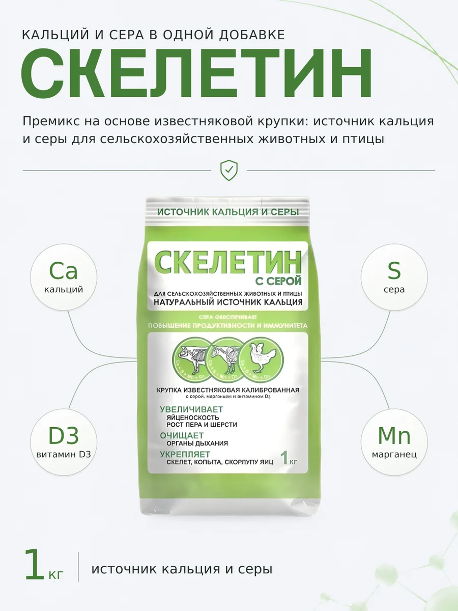
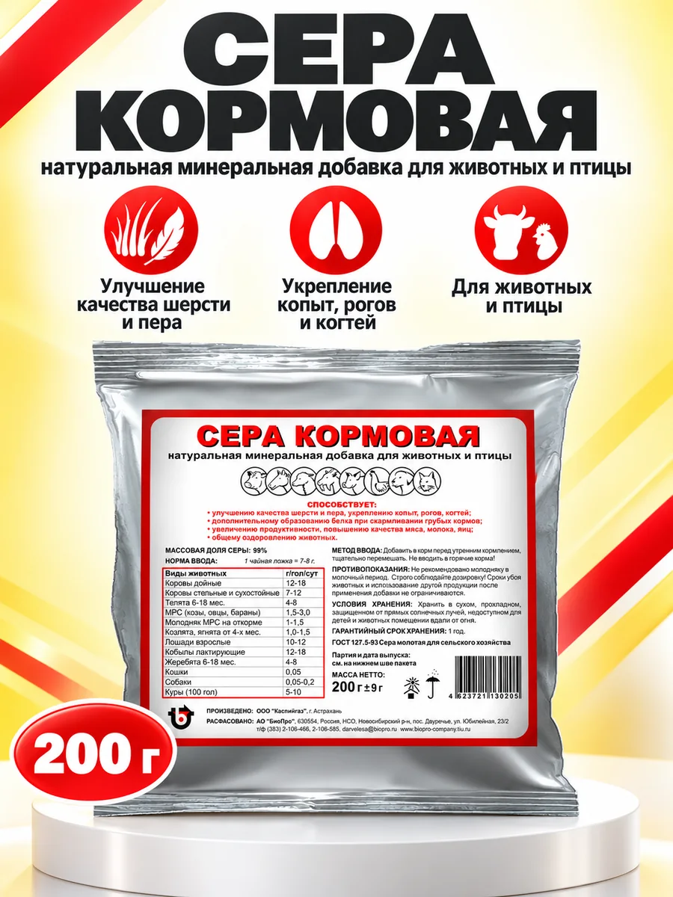

Линька у кур: что происходит и чем поддержать рацион
Линька — нормальный процесс, а не болезнь. Разбираем, что меняется в организме птицы и на что стоит обратить внимание в рационе.
Коротко
- Линька — естественная смена пера. Во время неё птица ест меньше, а кладка прекращается.
- Перо построено из белка, поэтому в рационе линьки важны серосодержащие аминокислоты: метионин 0,15–0,16%, метионин и цистин вместе 0,32–0,36%.
- После линьки световой день возвращают к 15–16 часам.
- Голодание как способ «запустить» линьку в личном хозяйстве применять не нужно.
- Перо, выпадающее пятнами или вне сезона, — повод показать птицу ветеринару.
Что происходит при линьке
Линька — это плановая смена оперения. Старое перо выпадает, на его месте растёт новое. Процесс требует ресурсов, поэтому организм перераспределяет их: потребление корма снижается, а яйцекладка прекращается.
Это не сбой. Несущаяся круглый год без перерыва птица — исключение, а не норма.
Важно отличать два разных явления. Естественная линька происходит сама, обычно к концу продуктивного периода. Принудительная линька — промышленный приём, когда её вызывают намеренно, чтобы обновить стадо. В личном подворье второй подход не нужен, и советовать голодание мы не будем.
Что нужно рациону в это время
Перо — это в основном белок, богатый серосодержащими аминокислотами. Отсюда и конкретные ориентиры из технического бюллетеня:
- метионин — 0,15–0,16% рациона;
- метионин и цистин вместе — 0,32–0,36%.
Это доли в рационе, а не «сколько насыпать в кормушку». Они полезны как ориентир при выборе корма и добавок: именно по этим показателям корма для периода линьки и различаются.
Сера участвует в построении этих аминокислот, поэтому к периоду линьки в хозяйстве часто вспоминают серосодержащие минеральные добавки. Норму ввода берите с упаковки.
Распространённая цифра «в пере около 4% серы» встречается в популярных текстах, но подтверждения в проверенных источниках мы не нашли, поэтому не используем её.
Свет после линьки
Когда линька завершается и птица возвращается к кладке, световой день возвращают к 15–16 часам. Делают это постепенно, а не разом.
Подробнее про зимний световой режим — в статье о кормлении кур зимой.
Чего ждать по срокам
Здесь мы честно скажем: проверенных данных о длительности естественной линьки в личном подворье у нас нет. Цифры «месяц» или «полтора» гуляют по интернету, но источника, на который можно сослаться, мы не нашли.
Ориентируйтесь на состояние птицы: пока растёт новое перо, кладки обычно нет, и это ожидаемо.
Когда обращаться к ветеринару
Покажите птицу ветеринарному специалисту, если:
- перо выпадает пятнами, с залысинами и раздражением кожи;
- линька началась вне сезона и у отдельных особей, а не у стада;
- вы видите насекомых на коже, у основания пера или в подстилке;
- птица расклёвывает себя или соседей до крови;
- вместе с потерей пера есть вялость, отказ от корма, понос.
Эти признаки похожи на линьку только внешне. Кормовая добавка здесь не поможет.
Чего не стоит делать
Не устраивайте птице голодание, чтобы «ускорить» линьку. Не меняйте корм резко. Не давайте одновременно несколько белковых добавок «для верности» — это не ускорит рост пера, зато собьёт баланс рациона.
И не ищите средство «от линьки». Линьку не лечат: её проходят.
Частые вопросы
Куры перестали нестись осенью — это линька?
Чаще всего да: прекращение кладки сопровождает линьку. Но если перо в порядке, а кладка упала, посмотрите на световой день и условия содержания.
Чем кормить во время линьки?
Рацион с достаточным количеством серосодержащих аминокислот — ориентиры приведены выше. Конкретные нормы добавок берите с упаковки.
Можно ли давать мясокостную муку и премикс одновременно?
Совместимость производители обычно не описывают. Если на упаковке об этом ничего не сказано, уточните у производителя или ветеринарного специалиста: складывать белковые источники «на глаз» не стоит.
Помогает ли сера от паразитов?
Нет. Кормовая сера — источник серы в рационе, а не средство против паразитов. При подозрении на паразитов обращайтесь к ветеринарному специалисту.
Что взять

Скелетин с серой, 1 кг Кормовые добавки Подробнее
Сера кормовая, 200 г Кормовые добавки ПодробнееЦены на сайте демонстрационные. Купить можно на Ozon — кнопка на странице товара.